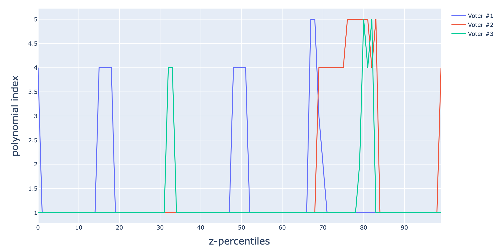

xpwpol
API Documenation
1 The structure of the model
As it has been briefly mentioned in the introductory section, the xpwpol module enables to parsimoniously identify an explicit piece-wise polynomial relationships of the form:
\[ \hat y = \dfrac{1}{n_v} \sum_{\kappa=1}^{n_v}P_{\sigma(x\vert \kappa)}(x)\quad \text{where}\quad \sigma(x\vert \kappa)\in \{1,\dots,n_r\} \tag{1}\]
where the multivariate polynomials \(P_\sigma\), \(\sigma=1,\dots,n_r\) are those associated to the implicit piece-wise model pwpModel that is an input argument of the call of the xpwpol module. The pwpModel is issued from the fit method of the pwpol module.
xpwpol needs pwpol
Before using the xpwpol module, an implicit model pwpModel needs to be fitted as it is used as one of the input arguments of the xpwpol module.
2 The Voters
The concept of voter stems from the difficulties of fitting a good classifier for the regions where each of the polynomials \(P_\sigma\) holds, on the one hand, and from the difficulty to define a scalable systematic partitionning of the features space (as the number of regions exponentially grows in the number of features) on the other hand.
The idea is then to use a set of \(n_v\) scalar partitionning of the features space using another set of polynomials, denoted hereafter by \(\pi_\kappa(x)\) so that the \(\kappa\)-th voter partitions the features space according to the nDiv quantiles of the scalar \(z_\kappa = \pi_\kappa(x-x^{(\kappa)}_c)\):
\[ \texttt{per}^{(\kappa)}:=\texttt{percentile}\Big(\pi_k(X_\texttt{train}-X_c^{(k)}), q=Q(\texttt{nDiv})\Bigr) \]{eq-percentiles}
where:
\[ Q(\texttt{nDiv}) := \Biggl\{\dfrac{1}{\texttt{nDiv}},\dots, \dfrac{1-\texttt{nDiv}}{\texttt{nDiv}}\Biggr\}\times 100 \tag{2}\]
By so doing, the voter indexed by \(\kappa\) associated to any vector of features \(x\) a region’s index \(i_\kappa(x)\) that is defined by:
\[ i_\kappa(x) := \min_j\Bigl\{\texttt{per}_j^{(\kappa)}\ge \pi_\kappa(x-x_c^{(\kappa)})\Bigr\} \tag{3}\]
The last step is then to associated to each of the nDiv possible value of \(i_\kappa(x)\), the associated polynomial \(P_\sigma\) to be used. This is summarized in a dictionary with \((\kappa, i)\) as keys:
\[ \texttt{dicSol}(\kappa, i): \sigma\quad (\kappa,i)\in \{1,\dots,n_v\}\times \{1,\dots,n_r\} \tag{4}\]
which explicits the notation \(\sigma(x\vert \kappa)\) used in Equation 1, namely:
\[ \sigma(x\vert \kappa) = \texttt{dicSol}[\kappa,i_\kappa(x)] \tag{5}\]
3 The xpwpol arguments args
The xpwpol objects created by the xpwpol module presents a set of arguments (some of which might have defaults values). Table Table 1 describes these arguments and their potential default values. The way these parameters are used is clarified in the forthcoming sections which describe the available methods and their examples of use.
args used in the xpwpol module.
| Parameter | Type | Used for | Default |
|---|---|---|---|
degPolRegions |
int |
The degree of the regions polynomials \(\pi_\kappa\) | 1 |
nModesRegions |
int |
Maximum number of monomials used in \(\pi_\kappa\) | 10 |
qmaxNormalization |
float |
The quantile used in normalizing the features | 95 |
nDiv |
int |
Number of partitions used for each voters | 5 |
nJump_fit |
int |
Under-sampling of the training data used in the fit | 1 |
qOpt |
int |
percentile of error to be optimized | 95 |
contractionFac |
float |
The contraction of the qOpt value needed to include a new voter (<1) |
0.95 |
eta |
int |
The quantile used in the computation of the normalized prediction errors | 50 |
revise |
bool |
Whether to check if a single voter is better than the aggregation | True |
regionsPolsPowers |
list[list[list[int]]] |
The list of power matrices of the voters | None |
regionsPolsCoefs |
list[list[float]] |
The list of coefficients vectors of the voters | None |
nVoters |
int |
The effective number of voters | None |
dicPartitionners |
list[dict] |
The list of partitionners (computing the indices \(i_\kappa(x)\) for a vector of features \(x\)) | None |
xc |
list[list[float]] |
The list of centers \(x_c^{(\kappa)}\) used by the different voters | None |
xNormalization |
list[float] |
The vector of features normalization induced by the choice of the qmaxNormalization value |
None |
dicSol |
dict |
The dictionary dicSol invoked in Equation 5 which associated a polynomial index \(\sigma\) to a pair of indices representing the voter and the region in the features space |
None |
4 The fit method
let us examine the example of use consisting in fitting an explicit piece-wise polynomial model for the sensor PS3 of the now famous Zema example.
4.1 Fitting an implicit pwpModel
As explained earlier the first step is to derive an implicit model using the pwpol module as already explained in the dedicated section.
from mizopol.pwpol_api import fit as pwpol_fit
# Download the dataframe
df = pd.read_csv('datasets/Zema.csv', index_col=0).iloc[::5]
# Choose the features columns and the label
coly = 'PS3'
colX = [c for c in df.columns if c != coly]
# Set the calling arguments' dictionary
args = dict(
th=0.05,
deg=3,
window=200,
th_monomial=1e-3,
)
# Fit the implicit pwpModel
pwpModel, (cpu1, cpu2) = pwpol_fit(
df=df[::10],
colX=colX,
coly=coly,
args=args
)
print(f'Implilcit pwpol fit Done -> cpu total = {cpu1:1.3} | cpu distant {cpu2:1.3} \n')Treated 0% | #rows= 5109 | #models = 0 | #coeffs = 0, | th=0.050
Treated 84% | #rows= 839 | #models = 1 | #coeffs = 3, | th=0.050
Treated 92% | #rows= 435 | #models = 2 | #coeffs = 9, | th=0.050
Treated 95% | #rows= 272 | #models = 3 | #coeffs = 14, | th=0.050
Treated 95% | #rows= 272 | #models = 3 | #coeffs = 14, | th=0.050
Treated 96% | #rows= 206 | #models = 4 | #coeffs = 36, | th=0.060
Treated 96% | #rows= 206 | #models = 4 | #coeffs = 36, | th=0.060
Treated 96% | #rows= 206 | #models = 4 | #coeffs = 36, | th=0.060
Treated 96% | #rows= 206 | #models = 4 | #coeffs = 36, | th=0.060
Treated 98% | #rows= 150 | #models = 5 | #coeffs = 45, | th=0.104
Implilcit pwpol fit Done -> cpu total = 34.3 | cpu distant 34.2 Upon executing this script, one disposes of the implicit model pwpModel which involves \(5\) polynomials \(P_\sigma, \sigma=1,\dots,n_r=5\). This model can be now used in the call for the fit method of the xpwpol module as shown hereafter
4.2 Fitting an xpwpol model
# Prepare the dictionar of arguments
argsx = dict(
nDiv=100,
nVoters_max=100,
nModesRegions=5,
degPolRegions=3,
qmaxNormalization=99,
nJumpFit=1,
qOpt=95,
revise=True
)
# Fit the model
model, (cpu1, cpu2) = fit(df, pwpModel, argsx)
print(f'cpu total for xpwpol fit Done = {cpu1:1.3} | cpu distant {cpu2:1.3} \n')Iter: 0, | error: [0.021, 0.049, 0.073, 0.119, 0.333, 0.576, 3.24] |nVoters: 1
Iter: 1, | error: [0.02, 0.045, 0.063, 0.089, 0.196, 0.33, 2.328] |nVoters: 2
Iter: 8, | error: [0.019, 0.045, 0.062, 0.083, 0.157, 0.279, 3.106] |nVoters: 3
cpu total for xpwpol fit Done = 24.3 | cpu distant 23.5 In this case, The xpwpol found an explicit solution involving \(3\) voters. Notice how:
the 99% normalized error’s percentile has been improved from 0.576 to 0.279 for instance upon adding new voters to the aggregation process described above (47%).
the 95% normalized error’s percentile which is targeted by the random optimization (since
qOpt=95 is used) has been improved from 0.119 to 0.083 (69%).
Notice taht The resulting model can then be used in the prediction as explained in the following section.
5 The predict method
from mizopol.xpwpol_api import predict
ypred, (cpu1, cpu2) = predict(df, model)
print(f'xpwpol predict Done -> cpu total = {cpu1:1.3} | cpu distant {cpu2:1.3} \n')
ytrue = df[coly].values
dfe = normalized_error(ytrue, ypred, 50)
print(dfe)xpwpol predict Done -> cpu total = 1.15 | cpu distant 0.538
Error
50% 0.019564
80% 0.045247
90% 0.062677
95% 0.083211
98% 0.157111
99% 0.279688
100% 3.1062326 Examining the dicSol dictionary
It is interesting to examine how each voter decomposes the features spaces into regions and affects a specific polynomial to each one of them.
This can be easily visualized using the dicSol field of the model.
from mizopol.xpwpol_api import plot_dicSol
fig = plot_dicSol(model)
fig.show()
nDiv quantiles used in the features space’s partitioning